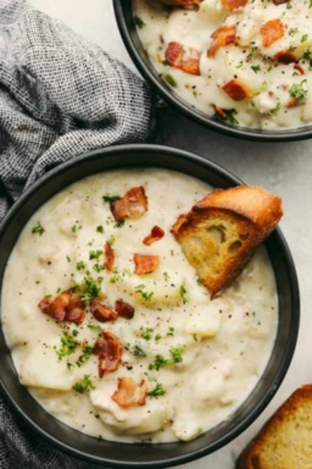

Classic Clam Chowder

Description
This delicious clam chowder is cream-based and calls for the traditional chowder ingredients: onion, celery, potatoes, diced carrots, cream, and clams. A little red wine vinegar is added before serving for extra flavor. Serving this dish inside of a bread bowl is optional but recommended for the best dining experience.
Ingredients
- 2 cups cubed potatoes
- 1 cup diced carrots
- 1 cup diced celery
- 1 cup minced onion
- 3 (6.5 ounce) cans minced clams, drained with juice reserved
- water to cover
- ¾ cup butter
- ¾ cup all-purpose flour
- 1 quart half-and-half cream
- 2 tablespoons red wine vinegar
- 1 ½ teaspoons salt
- ground black pepper to taste
Directions
- Place potatoes, carrots, celery, and onion into a large skillet; pour in clam juice and add enough water to cover. Cook and stir over medium-low heat until vegetables are tender.
- Meanwhile, melt butter in a large, heavy saucepan over medium heat. Whisk in flour until smooth. Whisk in cream and stir constantly until thick and smooth. Stir in vegetable mixture with any juices until just heated through.
- Stir in clams just before serving. If they cook too much they get tough. When clams are heated through, stir in vinegar and season with salt and pepper.